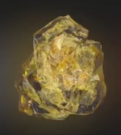

| Name |
Color |
Powers and capabilities |
Image |
| Soul |
Orandge |
According to Wong's ancient texts, the Soul Stone could prove to be the greatest threat out of all the Infinity Stones.[18] Gamora knew of the location of the Soul Stone from a map she found to its whereabouts (which she burnt) but kept this a secret from Thanos. Once captured and interrogated by her father, whom tortured Gamora's sister Nebula, he took her to its holding place on Vormir, where Red Skull, the Soul Stone's guardian, told them that it could only be accessed after a personal cost was paid - namely, the sacrifice of a loved one, to ensure that the owner understood its power. Thanos then tearfully sacrificed his daughter and later woke up with the Soul Stone in his hand, adding it to the Infinity Gauntlet shortly thereafter before heading off to retrieve the Time and Mind Stones. |
 |
| Time |
Green |
The Eye of Agamotto is an ancient artifact, a pendant created by Agamotto, the first Sorcerer Supreme, presumably to contain and harness the power of the green Time Stone contained inside. After being stored for an unknown amount of time on a pedestal in Kamar-Taj, it was recently wielded by Doctor Stephen Strange, first to aid him in his learning of sorcery, then in his final fight against Kaecilius and Dormammu. When wielded by someone having the necessary knowledge and skills, it appeared to be able to control the flow of time, be it on a small or massive scale, notably to turn back something to a previous state, to accelerate its time in order to apply changes that have not happened yet, or to lock it in a time loop, resetting its state until the wielder stops its effect. It appeared skilled sorcerers, or perhaps users of powers from the Dark Dimension could to an extent subtract themselves to the effects of the stone, stopping the time-reversal affecting oneself or detecting one was stuck in a time loop. It was noted by Wong and Karl Mordo that the use of the Eye was contrary to the natural order of things and extremely dangerous. With Wong's approval, it was placed back on its pedestal by Strange until he learned how to properly harness its powers. Strange wore it once again a little while later while meeting with Thor and Loki. Strange was forced to later surrender the Stone to Thanos in order to save Tony Stark's life. |
 |
| Space |
Blue |
The Tesseract is named for its cube-like appearance and is capable of controlling space itself, providing the user instant access to any location throughout the universe if used correctly. The unique element that composes the Tesseract has also been used to create advanced weaponry by races like the Humans. This stone played an important role in humanity's development during the dawn of the superhero age, attracting the attention of forces such as Red Skull and Thanos, both of whom sought to use the Tesseract's power for their own sinister intents. It is later revealed that the cube is a containment unit built around the actual Infinity Stone so that it could be somewhat safely handled and controlled. Despite such protection, touching the Tesseract barehanded can still have dire consequences as seen with Red Skull. However, it was later hinted that the Space Stone punished Red Skull for abusing its power for his own gain, suggesting at least some of the Infinity Stones can be touched directly by ordinary beings if they are deemed worthy. In Thor's vision, the Tesseract is shattered to unveil the blue Space Stone contained inside it. Thanos later acquired the Tesseract from Loki, who had saved it from Asgard's destruction. With only his bare hand, Thanos crushed the Tesseract and extracted the Space Stone within before he inserted it into the Infinity Gauntlet. In an alternate timeline, during the Time Heist on 2012, Loki picked up the Tesseract and used it to escape from S.H.I.E.L.D. and the Avengers. |
 |
| Mind |
Yellow |
According to Wong's ancient texts, the Soul Stone could prove to be the greatest threat out of all the Infinity Stones.[18] Gamora knew of the location of the Soul Stone from a map she found to its whereabouts (which she burnt) but kept this a secret from Thanos. Once captured and interrogated by her father, whom tortured Gamora's sister Nebula, he took her to its holding place on Vormir, where Red Skull, the Soul Stone's guardian, told them that it could only be accessed after a personal cost was paid - namely, the sacrifice of a loved one, to ensure that the owner understood its power. Thanos then tearfully sacrificed his daughter and later woke up with the Soul Stone in his hand, adding it to the Infinity Gauntlet shortly thereafter before heading off to retrieve the Time and Mind Stones. |
 |
| Reality |
Red |
The Aether appears as a dark, red, viscous liquid. It acts as a symbiotic force, capable of being absorbed into the body of a living host, giving the user the ability to warp reality at will, granting that person immense strength, durability, powers, and subjective influence over the universe. Malekith planned to use the Aether's reality-bending abilities to cover all Nine Realms in darkness; however, he was stopped by the combined efforts of Thor and Jane Foster. Only two people, Jane Foster and Malekith, are known to have been hosts for the Aether, but circumstances prevented the full extent of the Aether's potential from being explored. It is later shown that the Aether is actually an Infinity Stone contained in a liquid form, and in Thor's vision, this liquid solidifies into the red Reality Stone. The Aether is given to The Collector by Thor's companions, Sif and Volstagg and later seized by Thanos, who solidified it into the Reality Stone and inserted it into his Infinity Gauntlet. |
 |
| Power |
Purpule |
The Power Stone is an incredible power source, it increases the user's physical abilities and allows it to manipulate energy, which, when used at full potential, has enough power to obliterate an entire planet when unleashed. This stone was sought by Thanos, who tasked Ronan the Accuser to acquire it from the dead planet of Morag, in exchange for destroying Xandar. However, Star-Lord acquired the stone first and was prepared to sell it to Taneleer Tivan ("The Collector") with Gamora until its destructive power was unleashed at Knowhere. Soon after, Ronan obtained it and harnessed its energy with the intent of destroying all life on Xandar and killing Thanos. Star-Lord and the Guardians of the Galaxy were able to take the stone from Ronan and collectively harness its power to destroy him. They then gave the stone to Nova Prime Irani Rael for safekeeping on Xandar. However, Thanos would wipe out the Nova Corps in a successful attempt to acquire the Power Stone and he then inserts it into his Infinity Gauntlet. |
 |